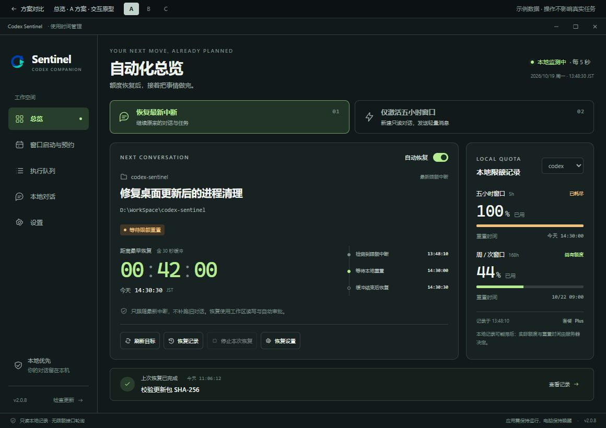
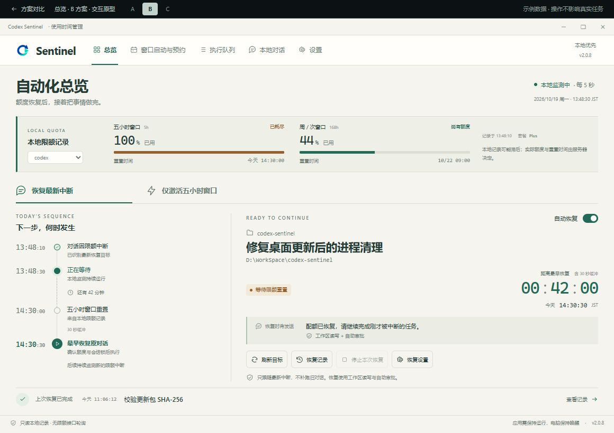
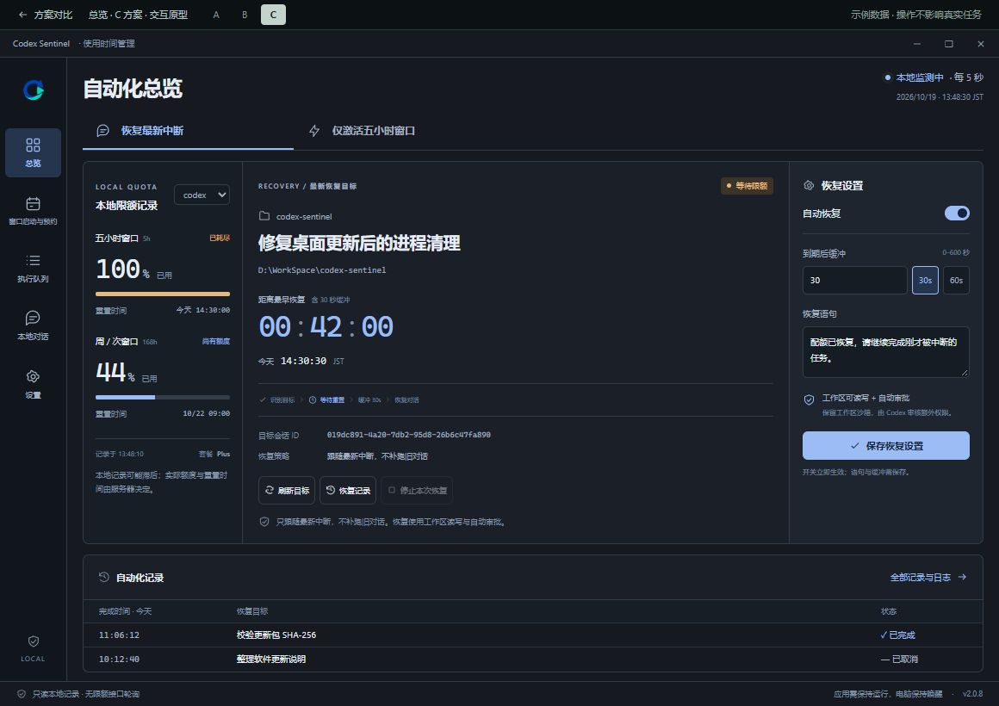

A 焦点驾驶舱
推荐以“接下来要恢复什么”为中心，任务与倒计时占据主区域，限额在右侧提供依据。
- 优势
- 主次清晰，易于扫读，原生桌面迁移成本较低。
- 取舍
- 调整语句与缓冲时需要展开设置；信息密度中等。
选择「自动化总览」作为全局设计的起点。它集中体现 Sentinel 的核心价值：看清本地限额、确认恢复目标，并提前安排额度恢复后的下一步。

以“接下来要恢复什么”为中心，任务与倒计时占据主区域，限额在右侧提供依据。

围绕“什么时候能继续”组织信息，把中断、等待、重置、缓冲与恢复连成一条时间线。

参考开发工具的工作台结构，限额、目标、恢复设置常驻，并在底部直接检查最近结果。
默认 1160 × 820，与当前 App 一致；可检查现有最小窗口 940 × 700。窄屏可横向滚动预览，或独立打开自适应页面。
Python 3.10+、PySide6 Widgets、QStackedWidget 与 QScrollArea；当前共 5 页：总览、窗口启动与预约、执行队列、本地对话、设置。三版保留这些导航，以及更新、托盘和本地监测的产品约束。布局均可用 Qt 原生控件与样式表实现。
只设计总览默认核心状态。恢复、持续激活、限额分组、缓冲、恢复语句、权限说明、目标刷新、停止执行、历史与日志均保留。所有操作均使用固定模拟数据，只在内存中生效。没有接入正式路由、业务接口或真实执行器。阅读设计说明与功能对照。